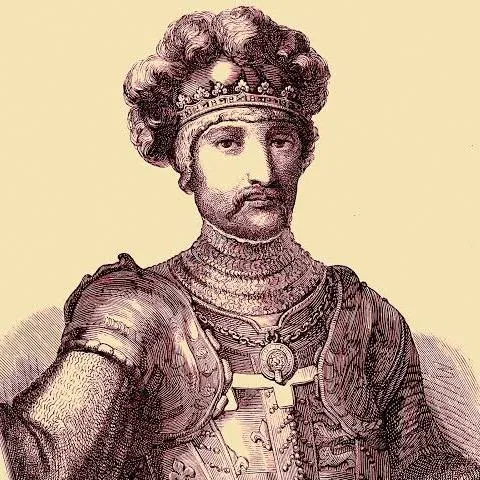

国民国家の誕生：中世の終焉と近代の胎動
1337 - 1453 | 116年の死闘
エドワード3世による王位主張。
アキテーヌ地方の支配権争い。
フランドルの毛織物産業。
イングランドの長弓が騎士団を圧倒。軍事革命の始まりです。

ポワティエの戦い(1356)で勝利。フランス経済を破壊しました。
1429年、オルレアンを解放。フランス人に「国家意識」を呼び起こしました。
フランス軍の大砲が勝利を決定づけ、戦争は終結しました。
| 項目 | イングランド | フランス |
|---|---|---|
| 国家意識 | 島国としての自覚 | 強い国民的団結 |
| 政治体制 | 議会の強化 | 絶対王政への道 |
Questions & Answers